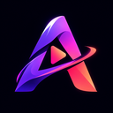
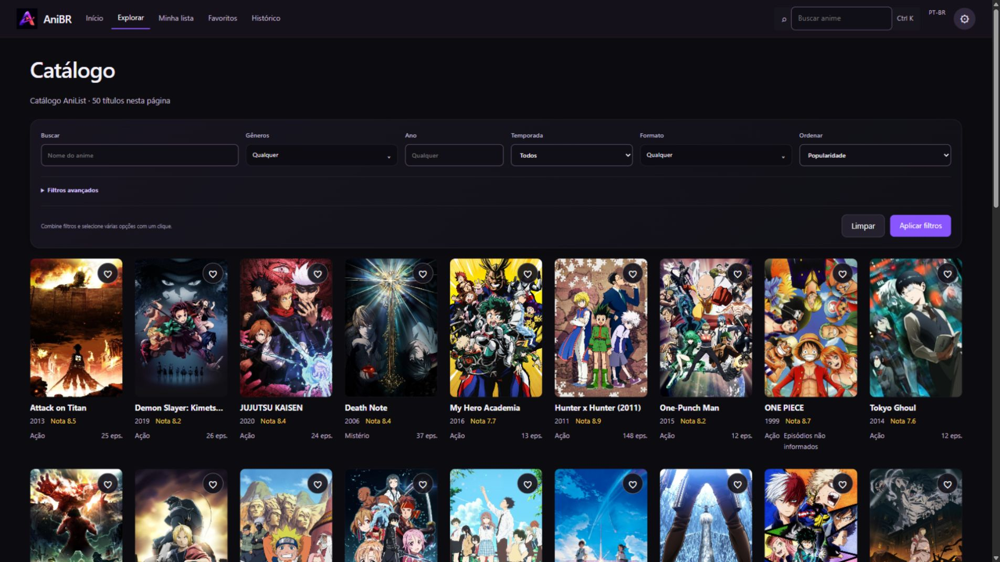

Sua lista, organizada
Separe o que quer assistir, o que está acompanhando e as histórias que já concluiu.
Quero assistir · Assistindo · Concluído
AniBR. Para WindowsFEITO PARA QUEM AMA ANIME
Novas histórias para descobrir.
Suas favoritas, sempre por perto. Tudo no seu ritmo.
Em português. Sem conta obrigatória. Do seu jeito.
Uma interface pensada para deixar a história em primeiro plano.
DO PRIMEIRO CLIQUE AO PRÓXIMO EPISÓDIO
Explore o catálogo, conheça cada obra e mantenha suas escolhas organizadas em um só lugar.

UM APP QUE ACOMPANHA VOCÊ
Separe o que quer assistir, o que está acompanhando e as histórias que já concluiu.
Quero assistir · Assistindo · ConcluídoCom o histórico ativado, o progresso fica salvo para você voltar ao ponto certo do episódio.
Retomada · Histórico · FavoritosLista, favoritos e progresso salvos no dispositivo. Exporte um backup quando quiser levá-los com você.
Armazenamento local · Backup JSONSEU UNIVERSO ESTÁ A UM CLIQUE
Conheça o AniBR no seu computador.
Prefere usar sem instalar? Extraia o ZIP e abra o AniBR.exe.
Já instalou? Aprenda a adicionar suas fontes ↓ Conheça o projeto no GitHubDO DOWNLOAD AO PRIMEIRO PLAY
O catálogo já está no AniBR. Para encontrar opções de vídeo, adicione uma fonte compatível nas configurações.
Abra a lista da comunidade e escolha um addon. Se ele oferecer uma página de configuração, ajuste as opções antes de copiar o link.
Abrir addons de animeCopie a URL do addon que termina em manifest.json. Se o link de instalação começar com stremio://, troque esse início por https:// e mantenha o restante.
Abra Configurações → Fontes instaladas, cole em URL do manifest e clique em Adicionar fonte. Depois, use Testar fonte para conferir o que ela oferece.
SE O LINK VIER ASSIM
stremio://addon.example/manifest.jsonCOLE ASSIM NO ANIBR
https://addon.example/manifest.jsonEndereço ilustrativo. Use o link do addon que você escolheu.
Configurações → Fontes instaladas
URL do manifest → Adicionar fonteAlguns addons oferecem só catálogo ou legendas. A reprodução depende do tipo de conteúdo, dos identificadores aceitos e da disponibilidade da fonte. Uma fonte incompatível será informada pelo app.
ANTES DO PRÓXIMO PLAY
Não. O nome na apresentação é opcional, fica salvo localmente e você pode continuar sem se identificar.
A versão disponível nesta página é para Windows de 64 bits. O aplicativo utiliza o WebView2 para a interface e reprodução.
Baixe o ZIP, extraia todos os arquivos e abra o AniBR.exe. Ela dispensa o instalador e utiliza o WebView2 do Windows, assim como a versão instalada. Os dados continuam salvos no dispositivo.
Os dados de catálogo vêm do AniList. Episódios e reprodução dependem das fontes compatíveis instaladas no aplicativo. O AniBR não hospeda episódios, e a disponibilidade e a qualidade variam conforme a fonte.
Sim. Nas configurações, você pode exportar favoritos, lista, progresso e sinopses em JSON e importar esses dados em outra instalação. Configurações privadas das fontes precisam ser reinstaladas.
Imagens de animes pertencem aos respectivos titulares. AniBR é um projeto independente.